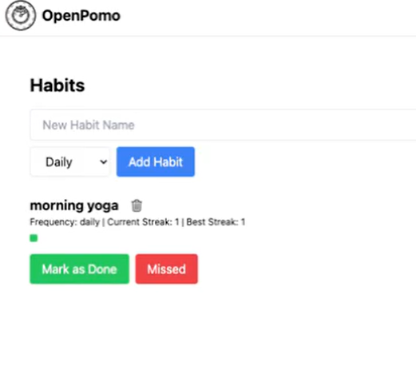
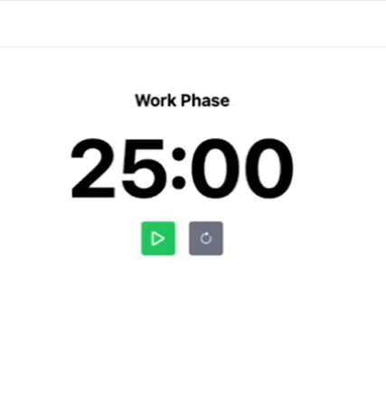
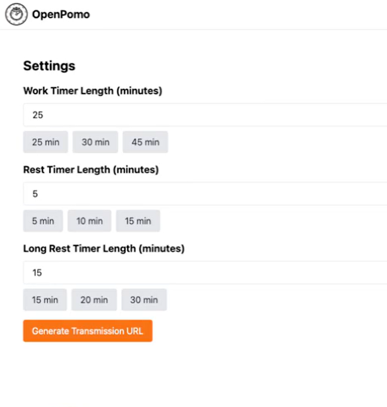
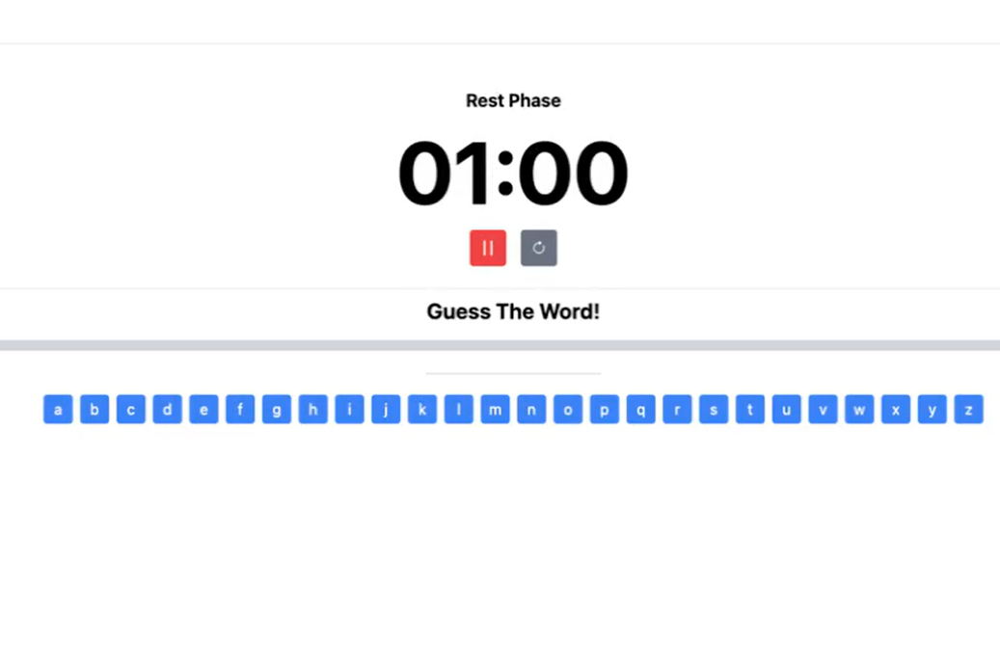

OpenPomo is a web app built around the Pomodoro technique, which helps people stay focused by working in timed sessions separated by short breaks. The goal was to make the technique easy to pick up and use, so we treated learnability as our main measure of success. The app is deployed online on Netlify, and the project was documented in a report covering the challenges we faced, the deployment, our decision process and the results.
I was a member of the development team and helped test the app and research how people learn to use it. This included checking that the timer and controls worked as expected and contributing to the learnability findings that shaped our decisions.



